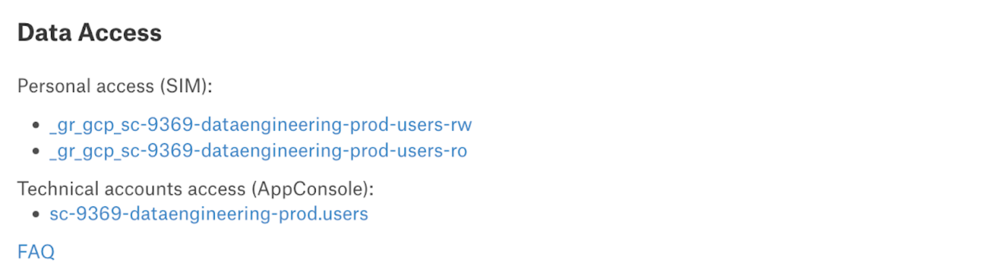

Instrukcja analityka
7 przykazań analityka Nyks
W codziennej pracy nie zapominaj o:
-
Umieszczaniu kodu, wyników i opisów w zadaniu na kolejce JIRA. Pamiętaj, że możesz podlinkować swój pull request na Github poprzez funkcje link → web link (więcej przeczytaj poniżej)
-
Odpowiednim tagowaniu tabel które produkujesz zgodnie z zasadami GDPR
-
Dodawaniu raportów cyklicznych i narzędzi do Raporty cykliczne oraz przelotki raportowej MEX-ANA
-
W przypadku Looker Studio odświeżania front-endu przy użyciu użytkownika technicznego oraz nadawania dostępu “edit” dla całego zespołu “fin-mex-analytics”
-
W przypadku raportów Tableau poinformowaniu użytkowników o procedurze otrzymania dostępu do danych - więcej przeczytaj poniżej
-
Umieszczanie wyników analiz ad-hoc - jeśli są plikami płaskimi na zespołowym dysku
-
Umieszczanie najciekawszych i rozbudowanych analiz produktowych na stronie Product Analytics
Grupy SIM
Aby rozpocząć pracę należy zobaczyć, czy do Twojego konta są dodane wszystkie dostępy. Spis najbardziej potrzebnych grup znajdziesz w tym linku: link.
Do grup możesz się dodać klikając na tę stronę - link, a następnie klikając w panelu po lewej stronie Grupy → moje członkostwo w grupach. Wystarczy, że skopiujesz nazwę grupy i wkleisz ją u góry w pasku wyszukiwania. Najlepiej dodawać grupy z końcówką manual. Do grupy dodajemy się poprzez zaznaczenie checkboxa przy odpowiedniej nazwie i kliknięcie u góry dołącz do grupy. UWAGA ! aby dodać się do grupy pamiętaj zawsze podać uzasadnienie, dlaczego chcesz dołączyć do grupy. Prośby bez podanego uzasadnienia są odrzucane. Prośba o dołączenie widoczna będzie w pasku po lewej stronie Żądania i zatwierdzenia → Zarządzaj moimi zatwierdzeniami.
Udostępnianie danych osobom z innych zespołów
- _gr_data_insiders - osoby, które chcą mieć dostęp do przeglądania danych o GMV/revenue muszą wnioskować o dostęp do tej grupy; oznakowanie dokumentów/raportów oznacza dane wrażliwe finansowe i musi być oznakowane też tagiem: has_confidential_data
- _gr_3p_all - grupa dotyczy wszystkich osób, którzy są w Allegro pl, nie mają wglądu do danych wrażliwych finansowych
Tableau
Obecnie nie trzeba składać już requestów o dostęp do Tableau. Wystarczy dodać się do grup - link (dane poufne, takie jakie znajdują się w site Finance). Jeśli chodzi o sam dostęp do Tableau to od grudnia 2023: - [x] każdy kto jest członkiem grupy _gr_tableau_access (która dziedziczy z _gr_3p_all or _gr_3p_AllegroPay, czyli każdy kto jest 3P ma dostęp do Tableau. - [x] licencja Viewera jest nadawana przy logowaniu się do Tableau odbierana jest po 7 dniach nieaktywności - [x] przy kolejnej próbie logowania jest automatycznie przywracana. Dotyczy to wszystkich site'ów - [x] proces odbierania i nadawania licencji jest praktycznie niezauważalny dla zwykłego użytkownika. Formularz dostępowy do Tableau zostanie zmieniony i będzie dotyczyć tylko ról Creatora.
GCP i Airflow
Konsola Big Query - pracujemy na 2 projektach: sc-10231-finance-bq-prod (produkcja) i sc-10231-finance-bq-dev (test).
Tabele
Spis tabel
Spis najbardziej popularnych i wykorzystywanych tabel w zespole można znaleźć w tym linku: link. W Allegro wciąż udoskonalana jest ogólna wiedza na temat tabel. W Alation po wpisaniu nazwy tabeli uzyskasz wiedzę na temat schematów tabel, opisów kolumn, a najważniejsze na temat grup w SIM, do których należy się dodać, aby móc z danej tabeli korzystać. Wiedza ta znajduje się w części Data Access:

Staramy się na bieżąco opisywać nasze najważniejsze tabele zespołowe. Niektóre opisy można znaleźć pod tym linkiem: link.
Tagowanie tabel
W związku z RODO i prowadzoną polityką w Allegro zwracamy szczególną uwagę, aby każda tabela na GCP była otagowana. Szczegółowe informacje na temat tego procesu znajdziesz w poniższych linkach:
GDPR process of describing data sets
Data processing rules for analysts
Przykład 1 użycie kodu na utworzenie tabeli bez określenia czasu wygaśnięcia plus dodanie labelek
CREATE TABLE
`sc-10231-finance-bq-dev.finance.nyks_629_fee_deduction_users_with_active_process_sierpien`
PARTITION BY v_date
OPTIONS
(
description = '',
labels = [('allegro__pers__id_data', '1'),
('allegro__pers__sensitive_data', '0'),
('allegro__dgov__days_to_expire', '0'),
('allegro__dgov__trunc_dataset', '0')
]
)
AS
SELECT
userID,
startDate,
timestamp_,
v_date
FROM `sc-10231-finance-bq-prod.billing.fee_deduction_report_users_with_active_process`
WHERE v_date BETWEEN '2023-08-01' AND '2023-08-31'
;
Przykład 2 użycie kodu na utworzenie tabeli z datą wygaśnięcia plus dodanie labelek
CREATE TABLE `sc-10231-finance-bq-dev.finance.nyks_629_fee_deduction_users_with_active_process_sierpien`
PARTITION BY v_date
OPTIONS
(
description = '',
labels = [('allegro__pers__id_data', '1'),
('allegro__pers__sensitive_data', '0'),
('allegro__dgov__days_to_expire', '0'),
('allegro__dgov__trunc_dataset', '0')
],
expiration_timestamp= TIMESTAMP '2023-12-03 12:34:56')
AS
SELECT
userID,
startDate,
timestamp_,
v_date
FROM `sc-10231-finance-bq-prod.billing.fee_deduction_report_users_with_active_process`
WHERE v_date BETWEEN '2023-08-01' AND '2023-08-31'
;
Przykład 3 użycie kodu na edycję labelek w już istniejącej tabeli
alter table `sc-10231-finance-bq-prod.campaign.campaigns_offer_criteria`
set options
(
labels = [('allegro__pers__id_data', '1'), ('allegro__pers__sensitive_data', '0'), ('allegro__dgov__days_to_expire', '0'), ('allegro__dgov__trunc_dataset', '0')]
)
;
W dalszej części o konfiguracji Daga znajdują się informacje jakie warunki należy dodać w Dagu, aby przy tworzeniu tabeli automatycznie dodawał labelki.